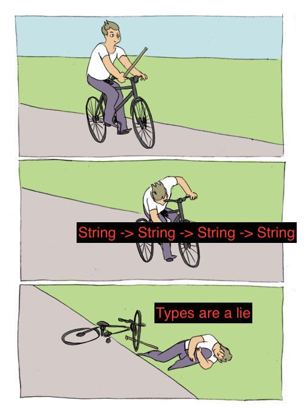

class: center, middle # Why Nix Shorts ## Justin Woo ### Berlin FP Group - 20 Apr 2021 --- # Objectives While this is not really a talk about Nix, we'll review Nix Shorts (for those who expected to learn about Nix). Then we will discuss why I wrote Nix Shorts. After, we'll talk about some of the things I expect out of documentation that others might agree with. --- # Nix Shorts Originally written in August - October 2019, Nix Shorts contains six independent posts: * Your First Derivation * Working With Nix Shells * Pinning to a specific Nixpkgs * Installing things to Nix Profile * Installing Packages from Files * Inspecting Values with [Nix] REPL --- # Your First Derivation A Derivation in Nix is a definition of a build, which takes some inputs and produces an output. The inputs are almost always in a `src` attribute, and outputs are almost always some `/nix/store/some-hash-pkg-name` path. ## Basic derivation example Start with some inputs you want to build with. ```bash $ mkdir src $ echo hello > src/hi.txt $ ls src hi.txt ``` --- Then prepare a `default.nix`, which will be used by default when we later run `nix-build`. ```nix # allow our nixpkgs import to be overridden if desired { pkgs ? import <nixpkgs> {} }: # let's write an actual basic derivation # this uses the standard nixpkgs mkDerivation function pkgs.stdenv.mkDerivation { # name of our derivation name = "basic-derivation"; # sources that will be used for our derivation. src = ./src; # see https://nixos.org/nixpkgs/manual/#ssec-install-phase # $src is defined as the location of our `src` attribute above installPhase = '' # $out is an automatically generated filepath by nix, # but it's up to you to make it what you need ln -s $src $out ''; } ``` --- ## Building our derivation With our derivation defined, we can build this derivation using `nix-build`. ```bash $ nix-build # or nix-build default.nix # some build logs /nix/store/some-hash-basic-derivation ``` `nix-build` will create a symlink to the output by default in `./result`. ```bash $ readlink result /nix/store/kgjcq77210jkjppc8628vcl27i6f22k8-basic-derivation $ readlink -f result /nix/store/54992nknd3av7j4p7fmsh96ja5hp1vli-src $ ls result hi.txt $ cat result/hi.txt hello ``` --- # Working With Nix Shells ## Shells with `-p` Using `nix-shell` with `-p` can get you quickly set up with a shell with packages from Nixpkgs installed. ```bash # from your top level $ nix-shell -p hello # nix shell with hello installed $ which hello /nix/store/some-hash-hello-2.10/bin/hello $ hello Hello, world! $ exit exit # back to your top level shell ``` --- ## Nixpkgs mkShell You can write an expression in a file using `mkShell`. Note `nix-shell` uses `shell.nix` or `default.nix` implicitly. ```nix # shell.nix { pkgs ? import <nixpkgs> {} }: pkgs.mkShell { buildInputs = [ pkgs.hello ]; } ``` And we can see this used like so: ```bash # implicitly does `nix-shell shell.nix --run ...` $ nix-shell --run 'which hello; hello' /nix/store/some-hash-hello-2.10/bin/hello Hello, world! ``` --- # Pinning to a specific Nixpkgs Because you want to be fairly sure what you write today works tomorrow. ```nix # pinned.nix import ( builtins.fetchTarball { url = "https://github.com/nixos/nixpkgs/archive/hash.tar.gz"; sha256 = "some-sha"; } ) ``` This expression uses the GitHub tarballs created for each publicly visible commit, using the builtin fetchTarball in Nix 2.x+. --- ## Usage In your expressions, you can simply replace usages of `<nixpkgs>` with your imported Nixpkgs expression. ```diff -{ pkgs ? import <nixpkgs> {} }: +{ pkgs ? import ./pinned.nix {} }: ``` ## With `fetchFromGitHub` ```nix let pkgs = import <nixpkgs> {}; in import (pkgs.fetchFromGitHub { owner = "nixos"; repo = "nixpkgs"; rev = "some-commit-hash"; sha256 = "some-sha"; }) ``` --- # Installing things to Nix Profile Nix Profile is a symlink location in `~/.nix-profile` when you install Nix. ```bash $ readlink ~/.nix-profile /nix/var/nix/profiles/per-user/your-user/profile $ readlink -f ~/.nix-profile /nix/store/some-hash-user-environment $ ls ~/.nix-profile bin etc include lib manifest.nix share ``` --- ## Installing packages from Nixpkgs To install packages from nixpkgs, you can use the `-A` flag to specify which attribute you want to install. ```bash $ nix-env -iA nixpkgs.python installing 'python-2.7.16' $ which python /home/your-user/.nix-profile/bin/python ``` ## Uninstalling packages The easiest method is to use `nix-env -e` (short for `uninstall`) and tab-complete. ```bash $ nix-env -e python uninstalling 'python-2.7.16' ``` --- ## Looking at what is in the environment To find out what packages you have installed in your environment, you can use `nix-env -q` (short for "query"). ```bash # example, may not match your results $ nix-env -q alacritty autorandr-1.8.1 bash-completion-2.8 bat-0.11.0 colordiff-1.0.18 ``` --- # Installing Packages from Files ## From a file of a single derivation expression Remember that every Nix source file is an expression. You can build and install packages from a file that is a derivation value. ```nix let pkgs = import <nixpkgs> {}; in pkgs.stdenv.mkDerivation { name = "test.txt"; # contents: "hello, i am test" src = ./test.txt; phases = ["installPhase"]; installPhase = '' mkdir -p $out/test ln -s $src $out/test/text.txt ''; } ``` --- ### Usage ```bash $ nix-build derivation.nix /nix/store/some-hash-test.txt $ cat result/test/text.txt hello, i am test ``` Outputs of directories can be installed to the profile. ```bash $ nix-env -if derivation.nix installing 'test.txt' building '/nix/store/some-hash-user-environment.drv'... created NNN symlinks in user environment $ cat ~/.nix-profile/test/text.txt hello, i am test ``` --- ## From a set of derivations This is mostly useful if you want to version control packages installed in your profile. ```nix { pkgs ? import <nixpkgs> {} }: { inherit (pkgs) python mypy; } ``` ```bash $ nix-env -if some-pkgs.nix installing 'mypy-0.701' installing 'python-2.7.16' building '/nix/store/some-hash-user-environment.drv'... created NNN symlinks in user environment ``` --- # Inspecting Values with [Nix] REPL It can be useful to inspect Nix expressions with the REPL. ```bash bash> nix repl Welcome to Nix version 2.2. Type :? for help. nix-repl> :? The following commands are available: <expr> Evaluate and print expression <x> = <expr> Bind expression to variable :a <expr> Add attributes from resulting set to scope :b <expr> Build derivation :i <expr> Build derivation, then install result into current profile :l <path> Load Nix expression and add it to scope # ... ``` --- ### Evaluate The first is the same as an expression evaluation: ```bash nix-repl> 1 1 ``` ### Bind The second is the same as a `let`-bind in an expression: ```bash nix-repl> a = 1 nix-repl> a 1 ``` This is equivalent to `let a = 1; in ...`, but the introduced variables will persist in the session. --- ### Example usage ```bash bash> nix repl '<nixpkgs>' # or `nix repl your-pinned-nixpkgs.nix` Loading '<nixpkgs>'... Added 10647 variables. nix-repl> pkgs.purescript.outPath "/nix/store/vmwdvr9fcrbvnfdjfrrpb07z8gzbi1q7-purescript-0.13.0" nix-repl> :b pkgs.purescript this derivation produced the following outputs: out -> /nix/store/vmwdvr9fcrbvnfdjfrrpb07z8gzbi1q7-purescript-0.13.0 bash> fd . /nix/store/vmwdvr9fcrbvnfdjfrrpb07z8gzbi1q7-purescript-0.13.0 /nix/store/vmwdvr9fcrbvnfdjfrrpb07z8gzbi1q7-purescript-0.13.0/bin /nix/store/vmwdvr9fcrbvnfdjfrrpb07z8gzbi1q7-purescript-0.13.0/bin/purs /nix/store/vmwdvr9fcrbvnfdjfrrpb07z8gzbi1q7-purescript-0.13.0/etc /nix/store/vmwdvr9fcrbvnfdjfrrpb07z8gzbi1q7-purescript-0.13.0/etc/bash_completion.d /nix/store/vmwdvr9fcrbvnfdjfrrpb07z8gzbi1q7-purescript-0.13.0/etc/bash_completion.d/purs-completion.bash ``` --- # Why Nix Shorts? There are many things I dislike about existing "introduction to Nix" materials. ## Irrelevant Nix implementation details * "How to make a derivation from scratch using `derivation`" * `nix-instantiate` "examples" * GC roots and other implementation details Akin to trying to introduce people to Haskell via GHC Generics and Template Haskell ## Lack of NixPkgs `stdenv/lib` usage * "Introductions" that don't use `mkDerivation` * What the hell kind of Nix code do you think people are going to be working with * Writing custom builders: why is this relevant in an introduction? --- ## Demonstrations and examples do not exist * Show me some code like what I will actually read and write * `callPackage`, formal arguments, expressions in files ## "Read Nix Pills" * People who say this must not actually have even read Nix Pills * Actual quote from Nix Pills: > These articles are not a tutorial on using Nix. Instead, we're going to walk through the Nix system to understand the fundamentals. --- # Doing something about it Doing the worst thing possible: take matters into your own hands. * What do people I know ask me over and over? * What do people I work with not know? * How can they start forming their own solutions? * What are the most basic concrete things they need to do? --- # What I aim to do in my articles * Nix Shorts: 6 articles * My Blog Posts: 113 articles <https://github.com/justinwoo/nix-shorts/tree/master/posts> <https://github.com/justinwoo/my-blog-posts/tree/master/posts> ## A single topic Not "philosophical", just one problem Should be fairly independent to consume ## A definition What does the topic mean, literally? --- ## Demonstration, with commands and code Code with explanation of intention and expected/actual output is * more useful than some kind of vague description * provides for the reader to form their own connections * reproducible, physically or not and resistant to API changes ### "The examples will go out of date" Did you explain well enough what is in the input and how it relates to the result? If yes: user can read changelogs and map the new interfaces to what is written If no: then maybe consider putting a bit more effort in this next time ### "The topic will go out of date" Yes, but also no. --- ## Explanations of unfamiliar bits Unfamiliar items are explicitly explained as much as possible If the explanation is insufficient, users can search further from this Fairly similar to the previous point about demonstrations, but this is more about "prerequisite knowledge" ### Don't treat readers like children Analogies should be brief, real details should be properly addressed ### "It's impossible to talk about the real things because it's endlessly complex" What is the difference between popular science news article, an undergrad biology textbook, and a microbiology textbook? Further: next slide --- ## Links to other resources You don't actually need to explain everything ...If you don't trap your users in a closed ecosystem No walled gardens; Almost no ideas are actually novel Referring to existing work saves everyone time Confusing topic might be illuminated by extra resources --- ## Doesn't have to be read Not every word even has to be read Skim through, read code, review when code is not readily understood "Narrative flow" often not even actually a thing Length of writing usually a sign that something is * too vague * too large in scope * overembellished --- .left[ ## No moral messaging "What you have been doing is WRONG/BAD" Only suggestions/starting points Don't put this god damn image in your docs: ] .right[  ] --- # The main things I expect from other articles * A single topic * A definition * Demonstration, with commands and code * Explanations of unfamiliar bits * Links to other resources * Doesn't have to be read * No moral messaging In reality, maybe even half of these would be good to meet. --- # Some extra things writings I dislike do ## Long README with no clear structure The solution is not more tooling to generate structure for your README by generating a table of contents. ## TODO Not even a single minute could be spared ## Analogies stretched too far Burritos, Lego ## Lies and misrepresentations Maybe I'm the only one who cares about this though --- # My hopes for articles in the future Everyone should write with their own ideas of what they want from their writing Nobody should be using these reasons to not write: * "I'm bad at writing" * "I don't want to maintain it" * "I'm too lazy" * "I don't know enough about it" But these are some of the reasons why you might not: * "I'm too lazy" * "I'm not motivated to" --- class: middle ## You might write because * writing reinforces what you know * you can review what you have written yourself * you can help others learn * you can help others gain different perspectives --- class: middle # End Thanks for coming and listening to my rambling Nix Shorts <https://github.com/justinwoo/nix-shorts> These slides <https://github.com/justinwoo/why-nix-shorts-talk> Advent of food 2020 <https://twitter.com/jusrin00/status/1333906250455805952>